Get commits stats
get_commits_stats.RmdWhen pulling commits you can choose to scan only specific
repositories (not whole organizations). If that is your wish, pass your
repositories (fullnames, i.e. org/repository path) to the
repos parameter instead of orgs parameter.
Example workflow makes use of public GitLab, but is rather more plausible, that you will use your internal git platforms.
library(GitStats)
git_stats <- create_gitstats() %>%
set_host(
api_url = "https://api.github.com",
repos = c("r-world-devs/GitStats", "r-world-devs/shinyCohortBuilder", "openpharma/DataFakeR"),
token = Sys.getenv("GITHUB_PAT")
) %>%
set_host(
api_url = "https://gitlab.com/api/v4",
repos = c("mbtests/gitstatstesting"),
token = Sys.getenv("GITLAB_PAT_PUBLIC")
)
#> ✔ Set connection to GitHub.
#> ℹ Your search parameter set to [repo].
#> ✔ Set connection to GitLab.
#> ℹ Your search parameter set to [repo].If you have your token environment variables stored in
GITHUB_PAT or GITHUB_PAT_* and
GITLAB_PAT or GITLAB_PAT_* you do not need to
specify them in set_host() function, GitStats
will automatically find them.
git_stats <- create_gitstats() %>%
set_host(
api_url = "https://api.github.com",
repos = c("r-world-devs/GitStats", "r-world-devs/shinyCohortBuilder", "openpharma/DataFakeR", "openpharma/GitHubMetrics")
) %>%
set_host(
api_url = "https://gitlab.com/api/v4",
repos = c("mbtests/gitstatstesting")
)Commits workflow
It is basically very similar to the repositories one, but you should
specify additionally at least date_from parameter.
pull_commits(
gitstats_obj = git_stats,
date_from = "2022-01-01",
date_until = "2023-08-31"
) %>%
get_commits_stats() %>%
gitstats_plot()
#> Rows: 620
#> Columns: 8
#> $ id <chr> "C_kwDOIvtxstoAKGQ3MDU1ZTdhNGVlY2VkMjQ3NTQ2NDg5NDk3NThj…
#> $ committed_date <dttm> 2023-08-25 14:20:51, 2023-08-25 14:20:05, 2023-08-25 1…
#> $ author <chr> "Maciej Banas", "Maciej Banaś", "Maciej Banaś", "Maciej…
#> $ additions <int> 0, 909, 682, 22, 63, 203, 1, 2, 33, 3, 186, 296, 179, 1…
#> $ deletions <int> 0, 448, 365, 10, 0, 304, 1, 1, 18, 1, 88, 69, 9, 231, 4…
#> $ repository <chr> "GitStats", "GitStats", "GitStats", "GitStats", "GitSta…
#> $ organization <chr> "r-world-devs", "r-world-devs", "r-world-devs", "r-worl…
#> $ api_url <chr> "https://api.github.com", "https://api.github.com", "ht…
You can pull stats by week or day.
get_commits_stats(
gitstats_obj = git_stats,
time_interval = "week"
) %>%
gitstats_plot()
You can also retrieve just the pulled output.
commits <- get_commits(git_stats)
head(commits)
#> id
#> 1: C_kwDOIvtxstoAKGQ3MDU1ZTdhNGVlY2VkMjQ3NTQ2NDg5NDk3NThjM2U1OWFiNGNiOWU
#> 2: C_kwDOIvtxstoAKDU1Y2I5ZTEzYzYwZjM5NTIwOTU4OTZjMDFkZmIxMjg2ZjkwOTg2ZTM
#> 3: C_kwDOIvtxstoAKGMxNTc0OTFhZmYzYWIzOTFjNzhiZjM4ZGVhNGJiZWVmNWI3ZmJjMGQ
#> 4: C_kwDOIvtxstoAKDIwMTliZTIwMmMyOGU1NzYxZDMwYjM2NDNjYzM5M2I0NTc3NDI1NjA
#> 5: C_kwDOIvtxstoAKGExMzRhMjhjODA4ZTNmYzY0OTIwZGNmY2YzMDA1MzM4MzMzNGYxNTM
#> 6: C_kwDOIvtxstoAKDllMDY1ZWYzMDAzOWI0MTVmMDExYWM1ZTdmZTYyMDE3MmYxY2NjYTI
#> committed_date author additions deletions repository organization
#> 1: 2023-08-25 14:20:51 Maciej Banas 0 0 GitStats r-world-devs
#> 2: 2023-08-25 14:20:05 Maciej Banaś 909 448 GitStats r-world-devs
#> 3: 2023-08-25 11:00:37 Maciej Banaś 682 365 GitStats r-world-devs
#> 4: 2023-08-25 07:03:20 Maciej Banas 22 10 GitStats r-world-devs
#> 5: 2023-08-24 10:35:59 Maciej Banas 63 0 GitStats r-world-devs
#> 6: 2023-08-24 07:54:10 Maciej Banas 203 304 GitStats r-world-devs
#> api_url
#> 1: https://api.github.com
#> 2: https://api.github.com
#> 3: https://api.github.com
#> 4: https://api.github.com
#> 5: https://api.github.com
#> 6: https://api.github.comYou can pull commits also by org or team.
You can not pull commits by phrase found in code blobs.